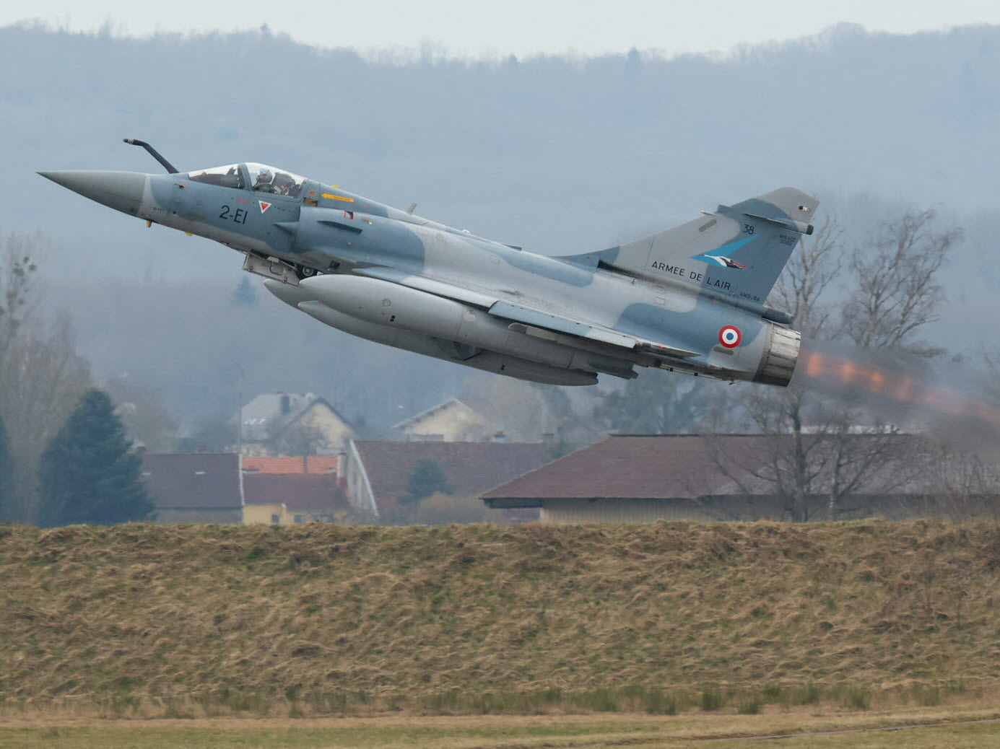
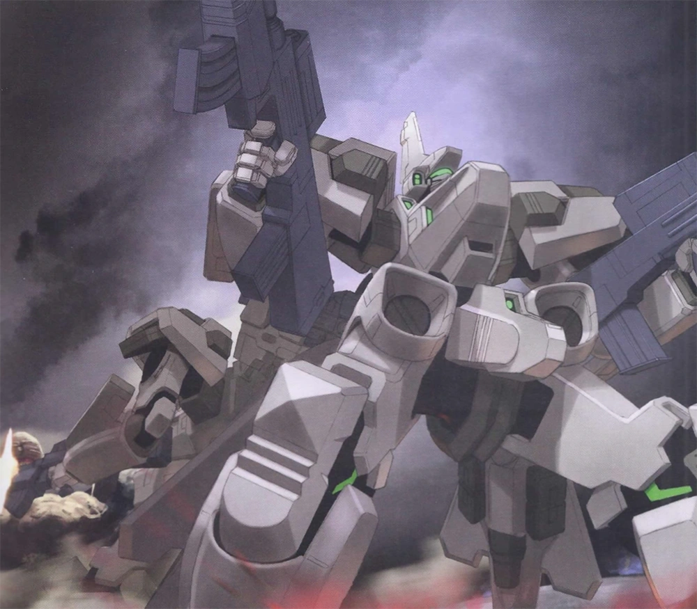

Mirage 2000
| Descrição | |
|---|---|
| Função: | Avião de combate multifulcional |
| Local de Origem: | France |
| Fabricante: | Dassault Aviation |
| Primeiro Voo: | 10 de março de 1978 |
| Introduzido em: | Julho de 1984 |
| Status: | Em serviço |
| Utilziadores: | |
| Produzido: | |
| Caractersiticas Gerais | |
| Tripulação: | 1 |
| Comprimento: | 14,36 m |
| Altura: | 5,2 m |
| Envergadura das Asas: | 9,13 m |
| Area das Asas: | 41 m 2 |
| Peso Vazio: | 7.500 kg |
| Peso Bruto: | 13.800 kg |
| Peso Máximo de Decolagem: | 17.000 kg |
| Capacidade de Combustivel: | 3.950 L interno
8.000 L máximo |
| Performace | |
| Motores: | 1 × motor turbofan com pós-combustão SNECMA M53-P2. |
| Empuxo: |
|
| Velocidade Máxima: | 2.336 km/h
Mach 2,2 |
| Alcance: | 1.550 km |
| Alcance de Combate: | Não disponível ao publico |
| Armamento | |
| Armas: | 2 × 30 mm (1,2 pol.) Canhão revólver DEFA 554, 125 tiros por arma |
| Hardpoint | 9 no total (4× sob asa, 5× sob a fuselagem) com capacidade de 6.300 kg de combustível externo e munições |
| Misseis |
Ar-Ar:
Ar-Terra:
|
| Bombas |
|
O Dassault Mirage 2000 é um caça a jato francês multifuncional,
monomotor, de quarta geração, fabricado pela Dassault Aviation. Foi projetado no
final da década de 1970 como um caça leve. O Mirage 2000 evoluiu para uma aeronave
multifuncional com diversas variantes desenvolvidas, com vendas para diversos países.
Mais de 600 aeronaves foram construídas e estão em serviço em nove nações.

Os caças Mirage 2000 em operação na Força Aérea Francesa são: Mirage
2000C/B, monoposto e biposto para defesa aérea; Mirage 2000N, um avião de dois lugares
projetado para penetração nuclear em quaisquer condições climáticas, em baixa altitude
e altíssima velocidade; Mirage 2000D, uma versão atualizada do Mirage 2000N para bombardeio
automatizado usando munições convencionais e guiadas por laser; e Mirage 2000-5, incorporando
aviônicos avançados, novos procedimentos de disparo ar-solo e ar-ar de múltiplos alvos usando
o radar RDY e novos sensores e sistemas de controle.

Curiosidades
O Mirage 2000N é uma variante dedicada de ataque nuclear , destinada a
transportar o míssil nuclear Air-Sol Moyenne Portée (ASMP). Os testes de vôo do primeiro
dos dois protótipos, Mirage 2000N 01 (o oitavo Mirage 2000) começaram em 3 de fevereiro
de 1983. Durante o vôo de 65 minutos, a aeronave atingiu uma velocidade de Mach 1,5.
O Mirrage 2000 já pertenceu a força aérea brasileira. Além disso ele já apareceu em series de jogos
como em "Ace Combat" e na fraquia de jogos "Muv-Luv".

Aparencia do Mirage-2000 na franquia "Muv Luv" durante uma Operação